model {
meanLambda ~ normal(meanLambdaMean, meanLambdaSD);
sdLambda ~ exponential(sdLambdaRate);
lambda ~ normal(meanLambda, sdLambda);
meanMu ~ normal(meanMuMean, meanMuSD);
sdMu ~ exponential(sdMuRate);
mu ~ normal(meanMu, sdMu);
psiRate ~ exponential(ratePsiRate);
psi ~ exponential(psiRate);
theta ~ normal(0, 1);
for (item in 1:nItems){
Y[,item] ~ normal(mu[item] + lambda[item]*theta, psi[item]);
}
}Empirical Priors for Measurement Model Parameters
Lecture 4h
Today’s Lecture Objectives
- Show differing choices of prior distributions for varying parameters
Example Data: Conspiracy Theories
Today’s example is from a bootstrap resample of 177 undergraduate students at a large state university in the Midwest. The survey was a measure of 10 questions about their beliefs in various conspiracy theories that were being passed around the internet in the early 2010s. Additionally, gender was included in the survey. All items responses were on a 5- point Likert scale with:
- Strongly Disagree
- Disagree
- Neither Agree or Disagree
- Agree
- Strongly Agree
Please note, the purpose of this survey was to study individual beliefs regarding conspiracies. The questions can provoke some strong emotions given the world we live in currently. All questions were approved by university IRB prior to their use.
Our purpose in using this instrument is to provide a context that we all may find relevant as many of these conspiracy theories are still prevalent today.
Conspiracy Theory Questions 1-5
Questions:
- The U.S. invasion of Iraq was not part of a campaign to fight terrorism, but was driven by oil companies and Jews in the U.S. and Israel.
- Certain U.S. government officials planned the attacks of September 11, 2001 because they wanted the United States to go to war in the Middle East.
- President Barack Obama was not really born in the United States and does not have an authentic Hawaiian birth certificate.
- The current financial crisis was secretly orchestrated by a small group of Wall Street bankers to extend the power of the Federal Reserve and further their control of the world’s economy.
- Vapor trails left by aircraft are actually chemical agents deliberately sprayed in a clandestine program directed by government officials.
Conspiracy Theory Questions 6-10
Questions:
- Billionaire George Soros is behind a hidden plot to destabilize the American government, take control of the media, and put the world under his control.
- The U.S. government is mandating the switch to compact fluorescent light bulbs because such lights make people more obedient and easier to control.
- Government officials are covertly Building a 12-lane "NAFTA superhighway" that runs from Mexico to Canada through America’s heartland.
- Government officials purposely developed and spread drugs like crack-cocaine and diseases like AIDS in order to destroy the African American community.
- God sent Hurricane Katrina to punish America for its sins.
Model Setup Today
Today, we will revert back to the CFA model assumptions to discuss the impact of different priors
- I chose CFA as it is very clear from non-Bayesian analyses what minimal identification constraints are needed
- Additionally, we will use a single latent variable/factor for this lecture
For an item \(i\) the model is:
\[ \begin{array}{cc} Y_{pi} = \mu_i + \lambda_i \theta_p + e_{p,i}; & e_{p,i} \sim N\left(0, \psi_i^2 \right) \\ \end{array} \]
Empirical Priors for Item Parameters
Empirical Priors
In many Bayesian references, the use of so-called “empirical priors” for various model parameters is suggested
- An empirical prior is one where the hyper parameters of the prior distribution are estimated and are not fixed
- For example:
- \(\lambda_i \sim N(\mu_\lambda, \sigma_\lambda)\); previously we specified \(\lambda_i \sim N(0, \sqrt{1000})\)
- \(\mu_i \sim N(\mu_\mu, \sigma_\mu)\); previously we specified \(\mu_i \sim N(0, \sqrt{1000})\)
- \(\psi_i \sim \text{exponential}(\text{rate}_\psi)\); previously we specified \(\psi_i \sim \text{exponential}(.1)\)
- Note: we aren’t including \(\theta\) just yet…
- Scale identification discussion is needed
Empirical Priors in Psychometric Models
- For psychometric models, the choice of empirical priors can have several pitfalls:
- Not all model parameters can use empirical priors (see the last example and the next lecture on identification)
- The use of such priors can make some parameter estimates move toward values that would indicate more information for \(\theta\) than what is present in the data
- Empirical priors may be inappropriate when some observed variables have widely different scales (or use different distributions)
- Overall, I do not recommend the use of empirical priors in psychometric analyses
- I show them to sync class with other Bayesian texts
Empirical Priors in Stan: Model Block
Notes:
- \(\lambda_i \sim N(\text{meanLambda}, \text{sdLambda})\)
meanLambdais the estimated hyperparameter for the mean of the factor loadings with prior distribution \(N\left(\text{meanLambdaMean}, \text{meanLambdaSD} \right)\)- `
sdLambdais the estimated hyper parameter for the standard deviation of the factor loadings with prior distribution \(\text{exponential}(\text{sdLambdaRate})\)
Additional Model Block Notes
- \(\mu_i \sim N(\text{meanMu}, \text{sdMu})\)
meanMuis the estimated hyperparameter for the mean of the factor loadings with prior distribution \(N\left(\text{meanMuMean}, \text{meanMuSD} \right)\)- `
sdMuis the estimated hyper parameter for the standard deviation of the factor loadings with prior distribution \(\text{exponential}(\text{sdMuRate})\)
- \(\psi_i \sim \text{exponential}(\text{psiRate})\)
psiRateis the estimated rate parameter for the unique standard deviations with prior distribution \(\text{exponential}(\text{ratePsiRate})\)
Stan Parameters Block
Notes:
- The rate parameters are constrained to be positive (as needed for the PDF of the exponential distribution)
Stan Data Block
data {
int<lower=0> nObs; // number of observations
int<lower=0> nItems; // number of items
matrix[nObs, nItems] Y; // item responses in a matrix
real meanLambdaMean;
real<lower=0> meanLambdaSD;
real<lower=0> sdLambdaRate;
real meanMuMean;
real<lower=0> meanMuSD;
real<lower=0> sdMuRate;
real<lower=0> ratePsiRate;
}Notes:
- We can import values for the hyperparameters for the prior distributions of each
R Data List
Notes:
- We are setting the hyperparameters for the loading mean and intercept mean to \(N(0,1)\)
- The hyperparameters for each rate are set to .1
Stan Sampling Function Call
Notes:
- Here, we can set the initial value of the mean hyperparameter for lambda to a very positive value
- This should allow us to avoid multimodal posteriors (especially when \(\theta\) initializes with the standardized sum score)
Connection of Empirical Priors to Multilevel Models
The empirical priors on the parameters are similar to specifying multilevel models for each
- \(\lambda_i \sim N(\mu_\lambda, \sigma_\lambda)\) can be reparameterized as \(\lambda^{*}_{i} = \mu_\lambda + e_{\lambda_i}\) with \(e_{\lambda_i} \sim N(0, \sigma_\lambda)\)
- \(\mu_i \sim N(\mu_\mu, \sigma_\mu)\) can be reparameterized as \(\mu^{*}_{i} = \mu_\mu + e_{\mu_i}\) with \(e_{\mu_i} \sim N(0, \sigma_\mu)\)
- The rate is a bit trickier, but also can be reparameterized similarly
Moreover, these reparameterizations can lead to predicting what each parameter should be based on item-specific predictors
- The basis of explanatory item response models
Model Results
[1] 1.5291# item parameter results
print(
modelCFA2_samples$summary(
variables = c("mu", "meanMu", "sdMu", "lambda", "meanLambda", "sdLambda", "psi", "psiRate")
),
n=Inf
)# A tibble: 35 × 10
variable mean median sd mad q5 q95 rhat ess_bulk ess_tail
<chr> <dbl> <dbl> <dbl> <dbl> <dbl> <dbl> <dbl> <dbl> <dbl>
1 mu[1] 2.30 2.28 0.0795 0.0627 2.18 2.45 1.25 161. 1415.
2 mu[2] 1.94 1.95 0.0722 0.0538 1.82 2.07 1.52 662. 1151.
3 mu[3] 1.86 1.84 0.0730 0.0577 1.74 1.99 1.53 541. 1352.
4 mu[4] 2.00 2.03 0.0736 0.0593 1.87 2.12 1.48 423. 999.
5 mu[5] 1.97 1.96 0.0710 0.0520 1.85 2.09 1.53 583. 864.
6 mu[6] 1.88 1.88 0.0656 0.0489 1.77 2.00 1.53 563. 859.
7 mu[7] 1.73 1.76 0.0704 0.0561 1.61 1.84 1.14 85.5 1215.
8 mu[8] 1.81 1.80 0.0729 0.0796 1.72 1.94 1.16 18.4 885.
9 mu[9] 1.80 1.78 0.0751 0.0573 1.67 1.93 1.53 612. 1122.
10 mu[10] 1.49 1.50 0.107 0.132 1.36 1.66 1.39 8.52 4.27
11 meanMu 1.85 1.83 0.0953 0.0689 1.72 2.02 1.08 37.0 1595.
12 sdMu 0.227 0.201 0.0727 0.0395 0.153 0.368 1.08 33.7 4193.
13 lambda[1] 0.775 0.795 0.0625 0.0495 0.663 0.876 1.35 273. 1606.
14 lambda[2] 0.828 0.808 0.0604 0.0435 0.743 0.941 1.11 73.0 1760.
15 lambda[3] 0.800 0.805 0.0571 0.0415 0.702 0.898 1.53 1272. 1645.
16 lambda[4] 0.816 0.796 0.0592 0.0455 0.725 0.925 1.53 962. 1841.
17 lambda[5] 0.900 0.902 0.0801 0.105 0.805 1.04 1.36 9.17 4.37
18 lambda[6] 0.848 0.837 0.0596 0.0594 0.779 0.957 1.14 20.1 1642.
19 lambda[7] 0.777 0.791 0.0555 0.0441 0.681 0.870 1.52 1014. 1558.
20 lambda[8] 0.823 0.805 0.0526 0.0379 0.747 0.923 1.16 122. 1275.
21 lambda[9] 0.824 0.801 0.0606 0.0468 0.733 0.937 1.36 267. 1772.
22 lambda[10] 0.744 0.755 0.0691 0.0625 0.619 0.835 1.11 25.6 1906.
23 meanLambda 0.812 0.795 0.0490 0.0361 0.738 0.904 1.53 760. 1276.
24 sdLambda 0.0637 0.0660 0.0451 0.0435 0.00474 0.138 1.52 7.19 4.02
25 psi[1] 0.879 0.865 0.0457 0.0333 0.816 0.965 1.07 42.1 2184.
26 psi[2] 0.731 0.727 0.0373 0.0268 0.670 0.799 1.52 10182. 2115.
27 psi[3] 0.760 0.754 0.0471 0.0592 0.711 0.845 1.21 13.4 2803.
28 psi[4] 0.744 0.733 0.0410 0.0287 0.690 0.822 1.07 38.0 4321.
29 psi[5] 0.555 0.566 0.0330 0.0268 0.496 0.608 1.53 283. 1805.
30 psi[6] 0.507 0.517 0.0297 0.0235 0.455 0.555 1.32 146. 3108.
31 psi[7] 0.672 0.663 0.0381 0.0263 0.622 0.744 1.09 29.5 2613.
32 psi[8] 0.472 0.464 0.0295 0.0212 0.432 0.527 1.07 36.4 3154.
33 psi[9] 0.773 0.759 0.0400 0.0299 0.716 0.849 1.21 82.7 3933.
34 psi[10] 0.854 0.855 0.0506 0.0719 0.769 0.911 1.19 14.2 2485.
35 psiRate 1.57 1.66 0.426 0.346 0.895 2.34 1.53 437. 2239. Comparisons with Non-Empirical Priors: \(\lambda\)
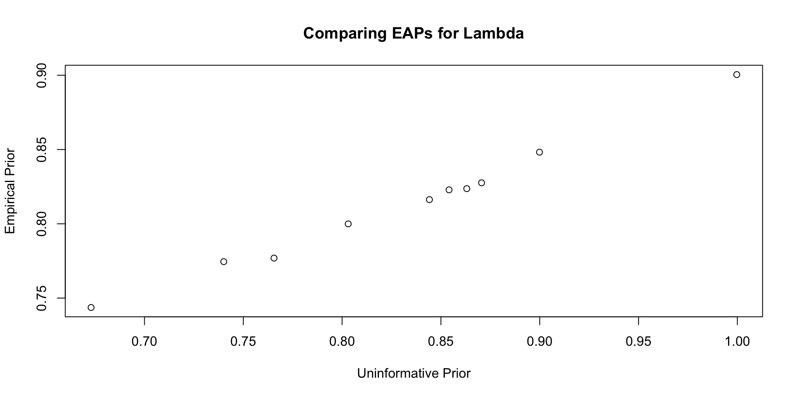Comparisons with Non-Empirical Priors: \(\lambda\)
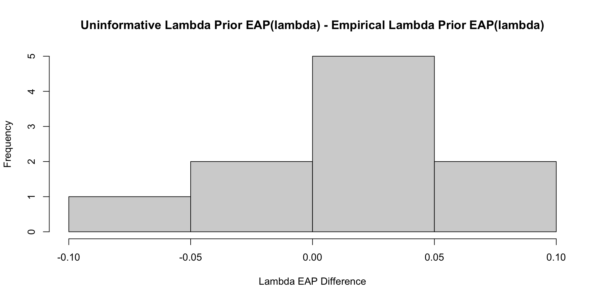Comparisons with Non-Empirical Priors: \(\lambda\)
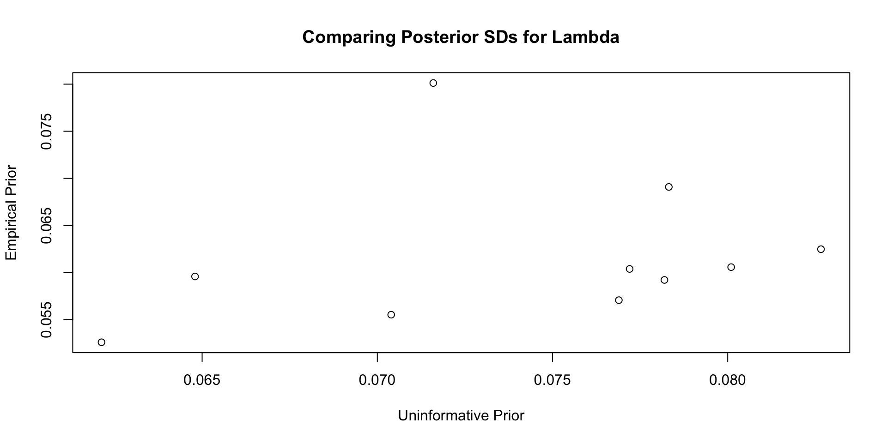Comparisons with Non-Empirical Priors: \(\lambda\)
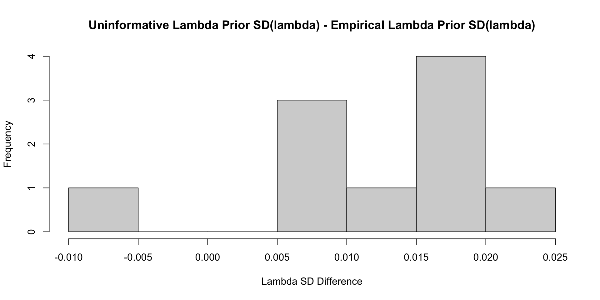Comparisons with Non-Empirical Priors: \(\mu\)
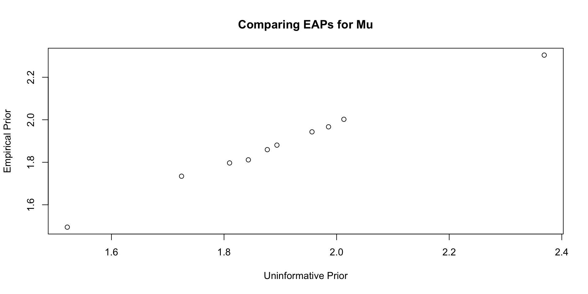Comparisons with Non-Empirical Priors: \(\mu\)
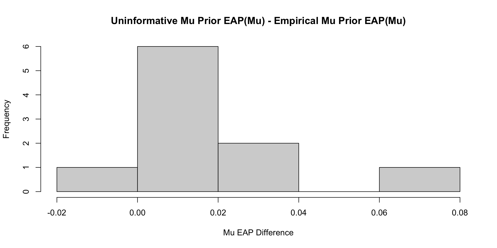Comparisons with Non-Empirical Priors: \(\mu\)
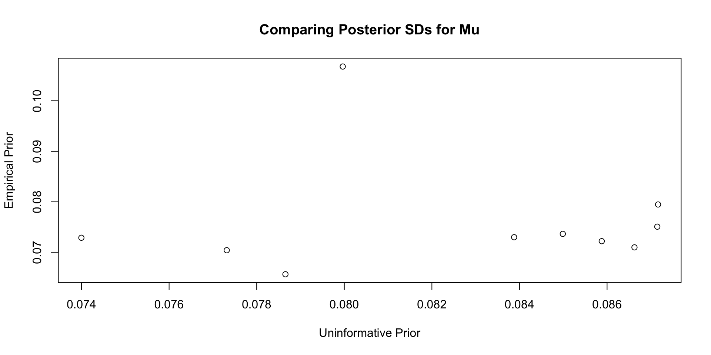Comparisons with Non-Empirical Priors: \(\mu\)
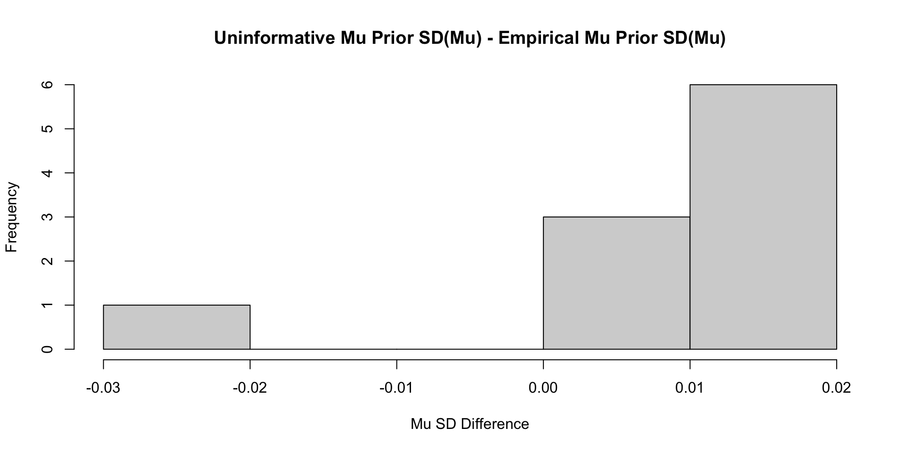Comparisons with Non-Empirical Priors: \(\psi\)
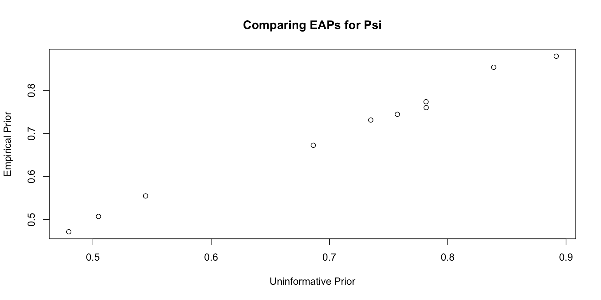Comparisons with Non-Empirical Priors: \(\psi\)
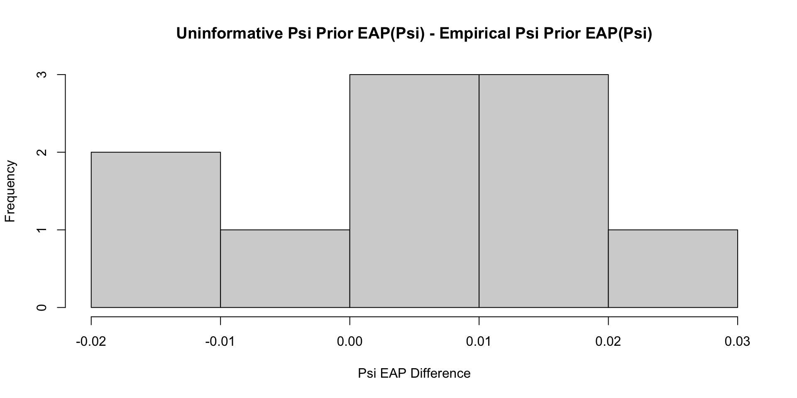Comparisons with Non-Empirical Priors: \(\psi\)
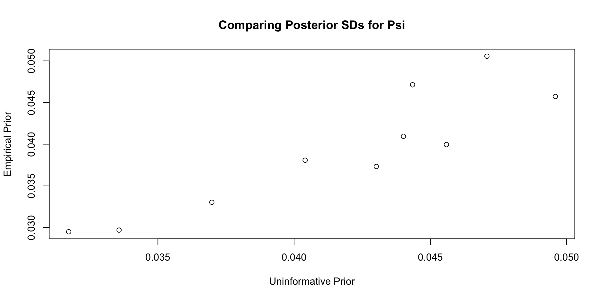Comparisons with Non-Empirical Priors: \(\psi\)
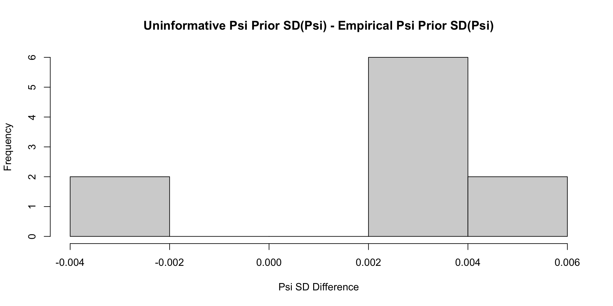Comparisons with Non-Empirical Priors: \(\theta\)
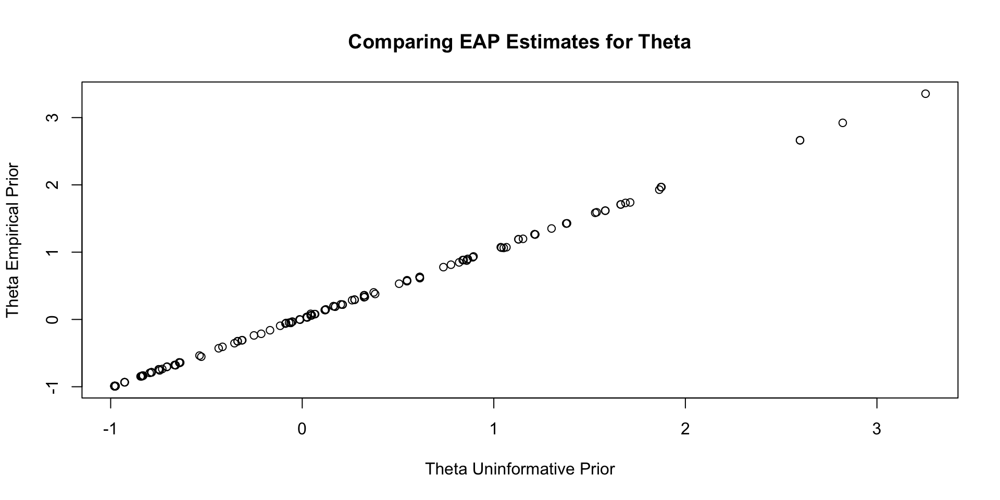Comparisons with Non-Empirical Priors: \(\theta\)
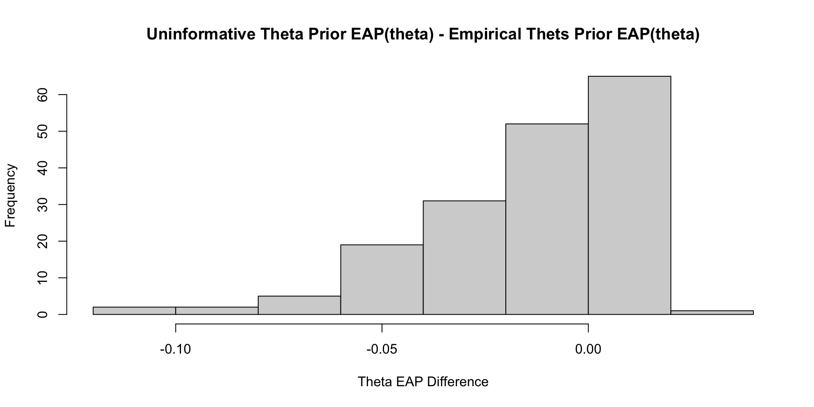Comparisons with Non-Empirical Priors: \(\theta\)
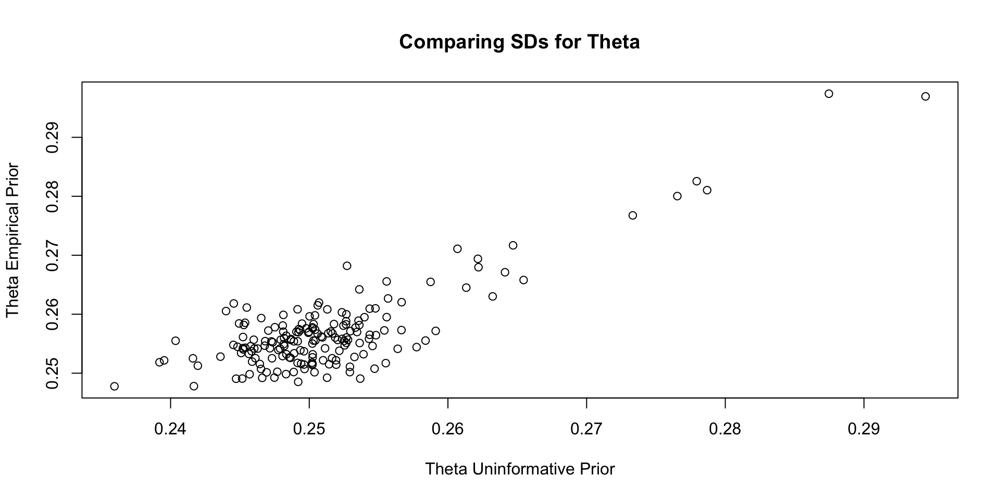Comparisons with Non-Empirical Priors: \(\theta\)
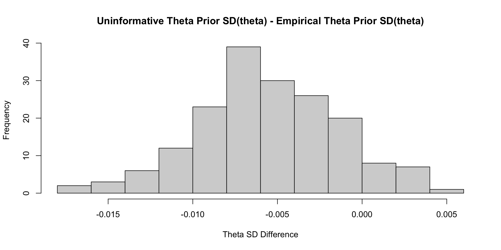Empirical Priors for \(\theta\) (?)
Empirical Priors for \(\theta\)
If empirical priors can work for the item parameters, can we use empirical priors to estimate the mean/standard deviation of the latent variable \(\theta\)?
In short: No!
The reason: Empirical priors for \(\theta\) change the mean/standard deviation of the latent variable
- These quantities have to be set for identification
We’ve set them to mean = 0 and standard deviation =1 (standardized factor) throughout this class
- We would have to fix other parameters to estimate these values (see next lecture)
For now, let me show you what would happen
- No syntax here, just results
First Attempt: Everything Empirical
[1] 1.276002# item parameter results
print(
modelCFA3_samples$summary(
variables = c("meanTheta", "sdTheta", "mu", "meanMu", "sdMu", "lambda", "meanLambda", "sdLambda", "psi", "psiRate")
),
n=Inf
)# A tibble: 37 × 10
variable mean median sd mad q5 q95 rhat ess_bulk ess_tail
<chr> <dbl> <dbl> <dbl> <dbl> <dbl> <dbl> <dbl> <dbl> <dbl>
1 meanTheta 0.649 0.673 0.472 0.392 -0.234 1.36 1.19 14.5 20.6
2 sdTheta 1.11 0.985 0.582 0.606 0.357 2.19 1.19 16.3 32.4
3 mu[1] 1.66 1.76 0.578 0.534 0.558 2.45 1.26 11.8 21.5
4 mu[2] 1.26 1.35 0.582 0.550 0.178 2.07 1.27 11.5 21.4
5 mu[3] 1.22 1.31 0.554 0.528 0.179 2.00 1.27 11.5 21.4
6 mu[4] 1.32 1.41 0.576 0.548 0.241 2.13 1.27 11.6 21.5
7 mu[5] 1.22 1.32 0.633 0.610 0.0403 2.12 1.27 11.4 20.6
8 mu[6] 1.18 1.28 0.589 0.562 0.0919 2.02 1.27 11.4 22.1
9 mu[7] 1.10 1.18 0.534 0.503 0.105 1.85 1.27 11.5 22.0
10 mu[8] 1.16 1.26 0.570 0.546 0.102 1.97 1.28 11.4 20.3
11 mu[9] 1.13 1.23 0.570 0.540 0.0808 1.94 1.27 11.6 20.6
12 mu[10] 0.957 1.04 0.503 0.470 0.0303 1.66 1.27 11.6 22.8
13 meanMu 1.21 1.30 0.566 0.539 0.167 2.01 1.27 11.7 22.3
14 sdMu 0.229 0.213 0.0780 0.0656 0.133 0.369 1.00 931. 1027.
15 lambda[1] 0.963 0.791 0.592 0.477 0.349 2.30 1.20 16.0 40.8
16 lambda[2] 1.02 0.849 0.598 0.493 0.381 2.35 1.19 16.4 30.2
17 lambda[3] 0.964 0.804 0.567 0.469 0.359 2.23 1.19 16.2 30.6
18 lambda[4] 1.00 0.833 0.591 0.487 0.373 2.32 1.20 16.1 32.4
19 lambda[5] 1.13 0.945 0.654 0.544 0.429 2.56 1.19 16.4 29.6
20 lambda[6] 1.04 0.874 0.607 0.506 0.395 2.39 1.19 16.4 29.2
21 lambda[7] 0.928 0.776 0.547 0.452 0.348 2.14 1.19 16.4 32.6
22 lambda[8] 1.00 0.841 0.588 0.487 0.380 2.33 1.20 16.2 29.0
23 lambda[9] 1.00 0.836 0.585 0.482 0.381 2.26 1.19 16.4 32.8
24 lambda[10] 0.862 0.716 0.510 0.415 0.319 1.99 1.19 16.5 35.1
25 meanLambda 0.987 0.826 0.577 0.479 0.372 2.27 1.20 16.3 30.0
26 sdLambda 0.103 0.0805 0.0739 0.0504 0.0331 0.249 1.12 26.0 134.
27 psi[1] 0.888 0.886 0.0489 0.0489 0.811 0.973 1.00 1797. 3065.
28 psi[2] 0.733 0.731 0.0422 0.0425 0.666 0.805 1.00 1810. 3060.
29 psi[3] 0.776 0.774 0.0445 0.0436 0.707 0.852 1.00 1845. 2396.
30 psi[4] 0.753 0.750 0.0437 0.0429 0.685 0.828 1.00 1902. 2303.
31 psi[5] 0.548 0.547 0.0366 0.0361 0.491 0.610 1.00 1232. 2207.
32 psi[6] 0.505 0.504 0.0330 0.0327 0.454 0.564 1.00 1609. 2424.
33 psi[7] 0.683 0.682 0.0395 0.0394 0.621 0.751 1.00 1287. 2584.
34 psi[8] 0.477 0.476 0.0311 0.0318 0.429 0.530 1.00 1325. 2405.
35 psi[9] 0.780 0.778 0.0452 0.0454 0.711 0.857 1.00 1343. 2252.
36 psi[10] 0.835 0.833 0.0464 0.0471 0.762 0.914 1.00 1606. 2705.
37 psiRate 1.56 1.52 0.464 0.453 0.887 2.40 1.00 1378. 1656. First Attempt: Everything Empirical

Second Attempt: Only Empirical for \(\theta\)
Here, I set the prior distributions for each type of parameter to be much more informative:
- \(\lambda_i \sim N(0, 1)\)
- \(\mu_i \sim N(0, 1)\)
- \(\psi_i \sim \text{exponential}{1}\)
Then, I set the prior values for the mean and SD of \(\theta\):
- \(\mu_\theta \sim N(0,1)\)
- \(\sigma_\theta \sim \text{exponential}{1}\)
Second Attempt: Only Empirical for \(\theta\)
[1] 1.250912# item parameter results
print(modelCFA4_samples$summary(variables = c("meanTheta", "sdTheta", "mu", "lambda", "psi")) ,n=Inf)# A tibble: 32 × 10
variable mean median sd mad q5 q95 rhat ess_bulk ess_tail
<chr> <dbl> <dbl> <dbl> <dbl> <dbl> <dbl> <dbl> <dbl> <dbl>
1 meanThe… 1.71e+0 1.69e+0 0.385 0.384 1.09 2.35 1.25 12.7 47.3
2 sdTheta 7.94e-1 7.72e-1 0.160 0.146 0.570 1.09 1.13 22.0 172.
3 mu[1] 7.97e-1 8.04e-1 0.324 0.322 0.249 1.32 1.05 98.0 273.
4 mu[2] 1.24e-1 1.25e-1 0.348 0.347 -0.454 0.697 1.05 86.5 252.
5 mu[3] 1.87e-1 1.90e-1 0.324 0.327 -0.347 0.716 1.05 92.4 225.
6 mu[4] 2.35e-1 2.35e-1 0.337 0.336 -0.329 0.794 1.05 89.7 257.
7 mu[5] -1.20e-1 -1.19e-1 0.384 0.385 -0.757 0.532 1.06 78.8 208.
8 mu[6] -4.31e-3 7.35e-4 0.349 0.347 -0.575 0.575 1.06 79.4 224.
9 mu[7] 1.11e-1 1.12e-1 0.309 0.313 -0.401 0.614 1.05 86.7 248.
10 mu[8] 4.06e-2 4.54e-2 0.330 0.327 -0.506 0.589 1.06 80.2 234.
11 mu[9] 1.66e-4 4.94e-3 0.348 0.343 -0.589 0.573 1.05 88.8 239.
12 mu[10] 1.03e-1 1.09e-1 0.292 0.294 -0.391 0.572 1.05 99.0 292.
13 lambda[… 9.40e-1 9.26e-1 0.197 0.191 0.643 1.29 1.10 26.8 183.
14 lambda[… 1.10e+0 1.08e+0 0.215 0.211 0.769 1.47 1.13 22.1 179.
15 lambda[… 1.01e+0 9.99e-1 0.202 0.199 0.702 1.37 1.12 23.1 121.
16 lambda[… 1.07e+0 1.05e+0 0.211 0.205 0.742 1.43 1.12 22.3 180.
17 lambda[… 1.26e+0 1.25e+0 0.239 0.231 0.891 1.68 1.13 21.2 162.
18 lambda[… 1.14e+0 1.13e+0 0.216 0.211 0.803 1.51 1.13 21.1 177.
19 lambda[… 9.66e-1 9.54e-1 0.191 0.184 0.671 1.29 1.12 22.9 146.
20 lambda[… 1.08e+0 1.07e+0 0.207 0.203 0.760 1.44 1.13 21.2 130.
21 lambda[… 1.08e+0 1.07e+0 0.215 0.210 0.756 1.45 1.12 24.3 129.
22 lambda[… 8.49e-1 8.37e-1 0.178 0.175 0.581 1.16 1.11 25.1 142.
23 psi[1] 8.93e-1 8.90e-1 0.0511 0.0503 0.812 0.980 1.00 4355. 4922.
24 psi[2] 7.35e-1 7.33e-1 0.0427 0.0428 0.667 0.807 1.00 4053. 4819.
25 psi[3] 7.81e-1 7.79e-1 0.0448 0.0449 0.710 0.858 1.00 3867. 4413.
26 psi[4] 7.58e-1 7.57e-1 0.0444 0.0443 0.688 0.834 1.00 3678. 4307.
27 psi[5] 5.46e-1 5.45e-1 0.0367 0.0363 0.487 0.609 1.00 3328. 4669.
28 psi[6] 5.05e-1 5.03e-1 0.0337 0.0337 0.451 0.562 1.00 3446. 4076.
29 psi[7] 6.85e-1 6.84e-1 0.0390 0.0386 0.625 0.753 1.00 4135. 4892.
30 psi[8] 4.80e-1 4.78e-1 0.0322 0.0318 0.429 0.535 1.00 3403. 4539.
31 psi[9] 7.82e-1 7.79e-1 0.0466 0.0465 0.710 0.862 1.00 3541. 4257.
32 psi[10] 8.40e-1 8.37e-1 0.0486 0.0475 0.762 0.922 1.00 3772. 4041. Second Attempt: Everything Empirical
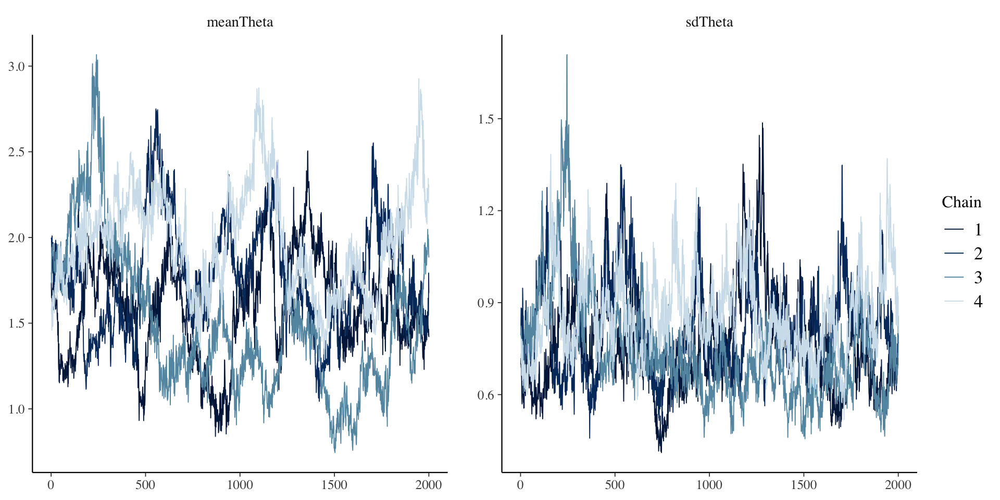Wrapping Up
Wrapping Up
Empirical priors tend to be somewhat common in Bayesian analyses
- But, they can be difficult to implement fully in psychometric models
- Item parameters can work fine – but may end up putting too much weight on some parameters
- Different types of models will have differing results
- Empirical priors for \(\theta\) require more work
- Need more constraints to identify the model